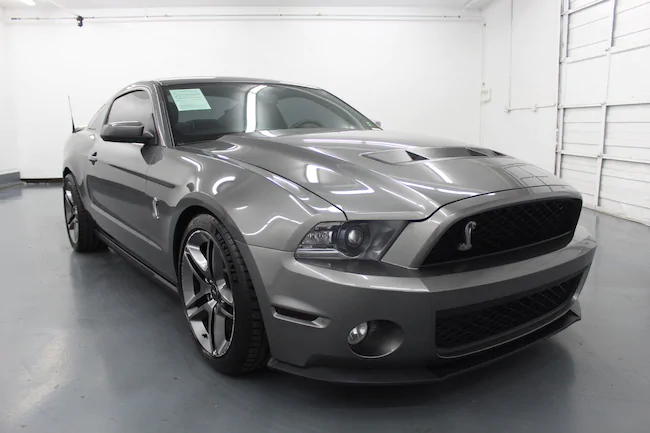
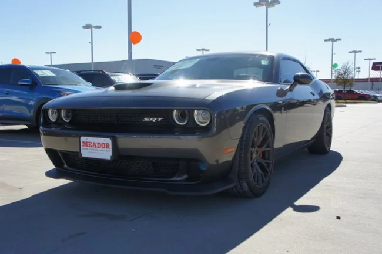
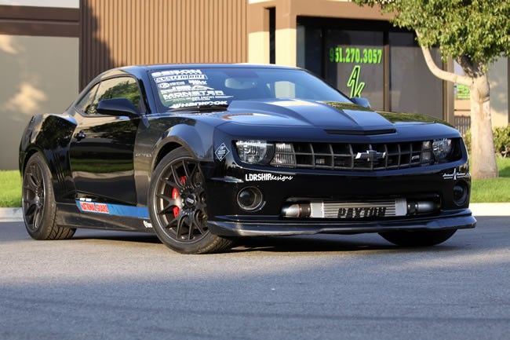

Coches Americanos
Los años 50s fueron esenciales para la industria automotriz americana. La era que continuó después de la segunda guerra mundial trajo consigo un gran rango de tecnologías al consumidor de automóviles. Los coches americanos tienden a ser muy grandes tanto de carrocería como de motor con sus más que conocidos V8 supercharger y la mayoría suelen ser automáticos.
Marcas USA:
- Chevrolet
- Dodge
- Ford
- Chrysler
- Plymouth
A continuación nombraremos algunos de los mejores coches Alemanes:
Ford Mustang Shelby GT500
El Ford Shelby GT500 el modelo 2011, se rediseñó el Shelby Mustang GT500 junto con el Ford Mustang base. Al igual que con el 2007-09 GT500, incluye fascias delantera y trasera únicas, capucha con respiraderos funcionales y alerón trasero único. El spoiler trasero incluía un flap funcional de Gurney. Junto con los nuevos colores exteriores, los clientes tenían la opción de extender las rayas exteriores en los asientos. La producción se limitó a 2000 unidades. Su motor 5.0 L "Coyote" válvula DOHC sobrealimentada de 4 válvulas V8 con transmisión manual de 6 velocidades o automático.
Dodge Challenger SRT
El Dodge Challenger es un automóvil de tipo muscle car fabricado por la compañía automovilística estadounidense Dodge, del grupo Chrysler. El Challenger SRT 2010 es prácticamente idéntico a su homólogo 2008, con la principal diferencia de la posibilidad de elegir una transmisión automática de 5 velocidades o una manual de 6 velocidades. Como características estándar se incluyen grandes frenos Brembo, una suspensión mejorada, los faros bi-xenón, asientos deportivos de cuero con calefacción, encendido sin llave, radio por satélite Sirius, y rines de 20 pulgadas (510 mm), ruedas de aluminio forjado. Tiene un motor de gasolina V8 6.2L HEMI que produce 707 HP (717 CV) y 881 Nm con un supercargador.
Chevrolet Camaro SS
El Chevrolet Camaro es un auto deportivo producido por el fabricante estadounidense Chevrolet GM. Se clasifica como un pony car y en algunas versiones también como un muscle car. El Camaro surgió como la respuesta de General Motors a su rival más digno durante esta época: el Ford Mustang. Chevrolet presentó este modelo en dos versiones: el camaro Rally Sport (RS) y el camaro Super Sport (SS). Este último contaba con un V8 de 5.7 litros, y otro motor opcional de 6,5 litros, estaban hechos para la clase de cliente estadounidense apasionado por la velocidad, con la idea de "correr en el verano y guardarlo en el invierno", ya que se fabricaba en versión descapotable como en coupé.
